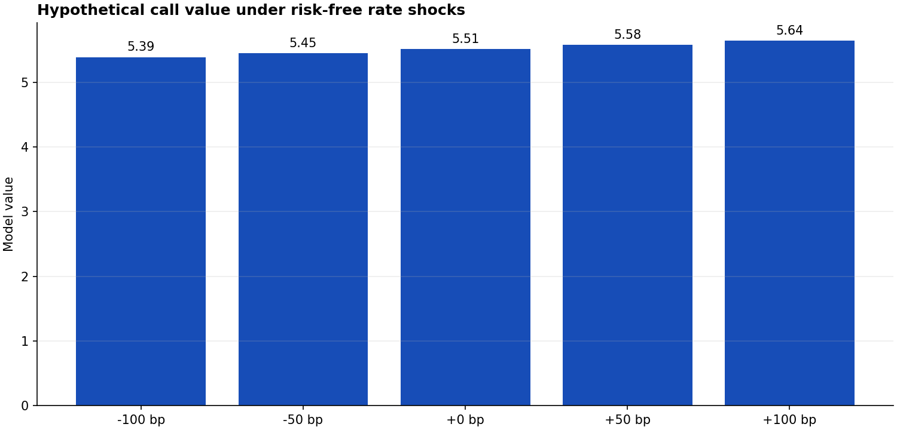

← All studiesSTUDY 10 · PUBLIC DATA
Derivatives & Pricing
Completed Black–Scholes–Merton scenario using the observed Treasury 3-month par rate and explicitly hypothetical option terms.
Not client work. Public-source analysis with stated hypothetical inputs where applicable. Not investment advice.
Observed results
| Data date | 2026-11-17 |
|---|
| Treasury 3-month rate (%) | 4.33 |
|---|
| Contract | hypothetical European call |
|---|
| Spot | 100.00 |
|---|
| Strike | 100.00 |
|---|
| Tenor years | 0.25 |
|---|
| Volatility (%) | 25.00 |
|---|
| Dividend yield (%) | 0.00 |
|---|
| Model price | 5.51 |
|---|
| Delta | 0.56 |
|---|
| Gamma | 0.03 |
|---|
| Vega per 1vol point | 0.20 |
|---|
| Assumptions are hypothetical except rate | Yes |
|---|

Method
Use latest available 3-month Treasury par yield as risk-free rate; calculate European call price and Greeks for a hypothetical at-the-money contract. Reprice over ±100bp rate shocks.
Source
https://home.treasury.gov/treasury-daily-interest-rate-xml-feed
Limitations
- Spot, strike, maturity, volatility and dividend yield are illustrative assumptions, not market quotes.
- European exercise only; no bid/ask, discrete dividends, borrow, funding basis or transaction costs.
- Not an executable valuation or recommendation.
Files
Built 2026-11-18 12:12 UTC from local raw inputs under .cache; raw files are excluded from Git.